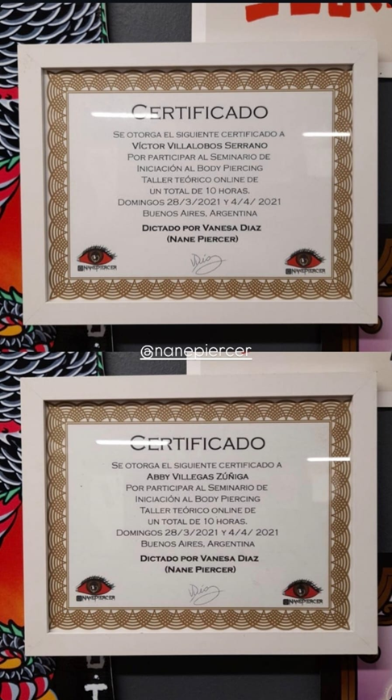
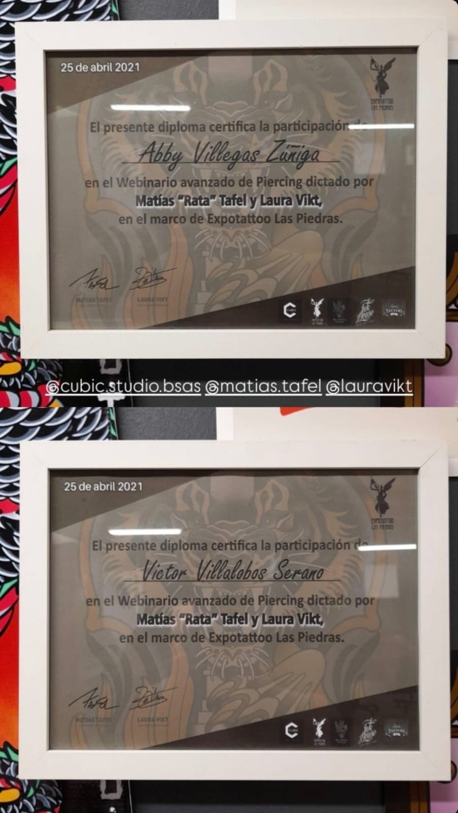
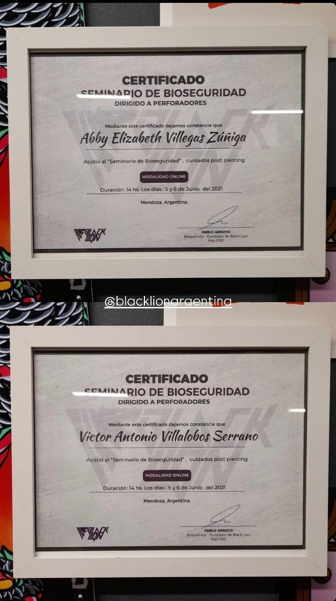

Arte y profesionalismo en cada perforación
Trabajamos con titanio ASTM-F136 grado implante y los mejores estándares de higiene en Copiapó.
Nuestra Historia
Otras tiendas
- ❌ Perforación con pistola (trauma y daño al cartílago)
- ❌ Joyería de acero quirúrgico o fantasía (niquel/alergias)
- ❌ Insumos reutilizables o procesos de esterilización dudosos
- ❌ Sin estudio previo de la anatomía de la zona
Bodyarts as Couple
- ✅ Solo bránulas de un solo uso (corte limpio y rápido)
- ✅ Joyería en Titanio ASTM-F136 (grado implante)
- ✅ Protocolos de asepsia estrictos y materiales estériles
- ✅ Asesoría técnica y diseño según tu tipo de oreja/rostro
Compromiso y Garantía
Para nosotros, cada perforación es un procedimiento que requiere el más alto rigor técnico. Nuestra formación constante y certificaciones oficiales no son solo documentos en la pared; son la promesa de que tu salud está en manos expertas. Entendemos que la confianza es la base de nuestra relación contigo, por ello, mantenemos nuestros estándares actualizados según las normativas de bioseguridad más exigentes, asegurando un entorno estéril y seguro para tu transformación.



Nuestros Servicios
Visítanos
Te esperamos en nuestro estudio con la mejor higiene y un ambiente privado para tu comodidad.
Dirección: Copiapó, Región de Atacama
Referencia: Local 202, 2do piso, Mall Plaza antiguo.
Horarios de Atención
- Lunes a Viernes 10:00 - 19:00
- Sábado 11:00 - 16:00
- Domingo Cerrado
POLÍTICAS DE AGENDA
- Abonos: Se requiere un abono previo para confirmar cualquier cita. Este monto se descuenta del total del servicio.
- Atrasos: Tolerancia máxima de 15 minutos. Pasado ese tiempo, la cita se cancela para no retrasar a los siguientes clientes.
- Cancelaciones: Deben avisarse con al menos 24 horas de anticipación para reagendar el abono.